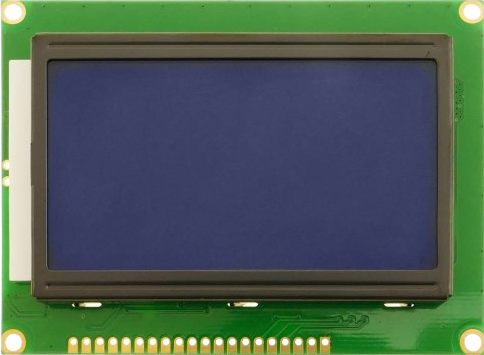

LCD Display 12864 #
Popis #
LCD 12684 je univerzálny grafický displej s rozlíšením 128x64 pixlov a je široko využívaný v rôznych priemyselných aplikáciách. Napájanie modulu je 5V a obsahuje integrovaný radič ST7920. Modul je možné k mikrokontroléru pripojiť prostredníctvom paralelného 8/4 rozhrania alebo pomocou sériového SPI rozhrania. Každý pixel je možné ovládať samostatne, modul obsahuje vlastné znakové sady.


Obr. 29 Displej QC12864.#
Zapojenie #
Vývody displeja
GND - Ground
VCC - Module power supply +5V
VO - LCD Contrast
RS - Register Select Pin / SPI CS serial select
R/W - Write/ Read selection / SPI MOSI serial data
E - Enable Signal / SPI SCK serial clock
D0...D7 - Data Bus
PSB - Interface selection
0 for serial communication
1 for 8/4-bit parallel communication
NC - Not Connected
RST - Reset
Vout - LCD Voltage Output (Vout < 7V)
BLA - Power Supply for Backlight+ +5V
BLK - Power Supply for Backlight- GND
Programovanie #
Knižnica #
Pre obsluhu displeja je vytvorená knižnica lib_lcd12864_spi. Pre vykreslenie na displeji je použitý modul framebuf.
API #
Konštruktor
LCD12864_SPI(spi, cs_pin, rst_pin, rotation)
Metódy
clear() - Clear display
set_font(font) - Set font for text
set_text_wrap(on) - Set text wrapping
draw_text(text, x, y, color) - Draw text on display
draw_bitmap(bitmap, x, y, color) - Draw a bitmap on display
show() - Send frameBuffer to lcd
Pre riadenie displeja je potrebné inicializovať SPI rozhranie a definovať pin CS (chip select).
from pyb import SPI
from lib.lcd12864_spi import *
spi = SPI(2, SPI.CONTROLLER, baudrate=100000, polarity=1, phase=1, crc=None)
lcd = LCD12864_SPI( spi = spi, cs_pin = 'D6', rst_pin = 'D2', rotation = 1 )
Príklady #
Použitie príkazov z modulu framebuf
from pyb import SPI
from lib.lcd12864_spi import *
spi = SPI(2, SPI.CONTROLLER, baudrate=100000, polarity=1, phase=1, crc=None)
lcd = LCD12864_SPI( spi = spi, cs_pin = 'D6', rst_pin = 'D2', rotation = 1 )
lcd.text( "123.456", 50, 25, 1 )
lcd.rect( 0, 0, 128, 64, 1 )
lcd.rect( 3, 3, 128-6, 64-6, 1 )
lcd.line(0,0,20,30,1)
lcd.ellipse(30,30,15,15,1)
lcd.show()